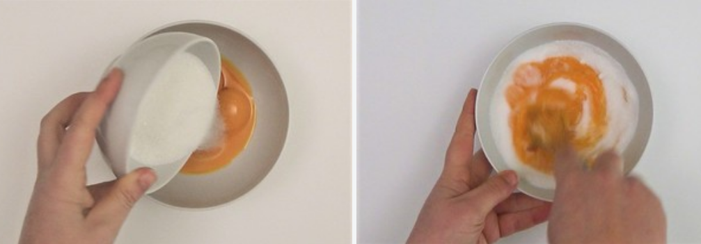
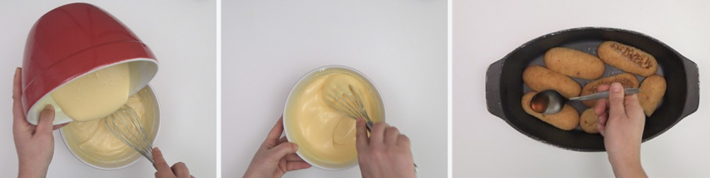

Tiramisú

El tiramisú es una de las recetas de postres más famosas de la cocina italiana. Una receta tradicional de Italia a pesar de ser bastante reciente. Su origen se sitúa en la región de Véneto en los años 50 y no llevaba marcarpone ni licor. Es decir, que era sin queso. El tiramisú tal como lo conocemos ahora en su tiempos era mucho más sencillo, sólo empleaban 5 ingredientes: huevos y azúcar, bizcochos Savoiardi mojados en café y cacao en polvo. Es uno de mis postres preferidos gracias al sabor a café y chocolate. No dejen de improvisar para adaptar la receta a los gustos de cada uno.
- 500gr de mascarpone
- 6 huevos (6 yemas y 4 claras)
- 150gr de azúcar impalpable
- 300gr de vainillas
- 4 cdas de licor
- Una pizca de sal
- 10 a 20gr de cacao en polvo
- 150ml de café
Ingredientes:
- Cazuela
- Bowl
- Batidora
- Espátula de silicona
- Molde
- Colador
Utencilios:
- Calentar agua en una cazuela grande, sin llegar a hervir. Mientras, separar las yemas de las claras y apartar en una taza.
- Los huevos deben estar a temperatura ambiente. Mezclamos el azúcar, en un cuenco metálico, con todas las yemas. 
- Empezamos batiendo en el cuenco fuera del agua y cuando comience a espumar introducimos el cuenco en la cazuela con el agua caliente.
- Una vez dentro batimos hasta que las yemas dupliquen su tamaño. Vamos agregando poco a poco las cuatro cucharadas de licor y mezclando de manera envolvente hasta que estén incorporadas a la crema.
- Después de mezclar todo seguimos en frío hasta que nos quede una crema esponjosa y compacta. Reservamos para el montaje del tiramisú.
Preparación del sambayón
- Batimos las claras a punto nieve. Para ello introducimos en un bowl las claras a temperatura ambiente. Les agregamos un poco de sal y empezamos a batir hasta que las claras suban y queden firmes. Luego manejamos el merengue con la espátula de silicona.
- Agregamos la crema sambayón que tenemos reservada a las claras batidas. Mezclamos de manera envolvente y con cuidado hasta que quede todo integrado e intentando que bajen lo mínimo posible.
- Batimos el queso mascarpone hasta que quede cremoso (lo mejor es batirlo a temperatura ambiente). Lo mezclamos con la crema anterior suavemente, intentando que no se baje la crema para mantenerla esponjosa.
Para el tiramisú:
- En un molde ponemos una capa de vainillas y las mojamos con un poco de café. 
- Cubrimos con una capa de crema de queso y huevo y repetimos la operación hasta tener una o dos capas más, vainillas húmedas y capa de crema. El último paso es el del toque del cacao. Este ingrediente es el que da ese contraste tan importante en este postre.
- Lo espolvoreamos sobre el postre con un colador.
- Por úlitmo, lo dejamos en la heladera hasta que se enfríe y esté lo suficientemente firme.
Presentación del tiramisú: